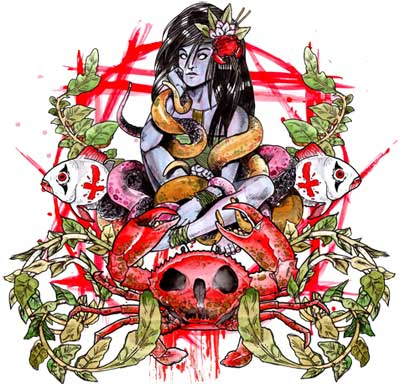

Metalorgie Fest - 8&9 Avril - Barakason (Rezé, 44)

8 Avril : 13€
(préventes) / 15€ (sur place le jour du concert) / 11€
(abonnés)
Acheter vos places : Digitick, Ticketnet (Leclerc), Fnac, CSC Chateau, ...
9 Avril : 13€ (préventes) / 15€ (sur place le jour du concert) / 11€ (abonnés)
Acheter vos places : Digitick, Ticketnet (Leclerc), Fnac, CSC Chateau, ...
8&9 Avril, pass 2 jours : 20€ (préventes) / 22€ (sur place le jour du concert) / 18€ (abonnés)
Acheter vos places : Digitick, Ticketnet (Leclerc), Fnac, CSC Chateau, ...
Acheter vos places : Digitick, Ticketnet (Leclerc), Fnac, CSC Chateau, ...
9 Avril : 13€ (préventes) / 15€ (sur place le jour du concert) / 11€ (abonnés)
Acheter vos places : Digitick, Ticketnet (Leclerc), Fnac, CSC Chateau, ...
8&9 Avril, pass 2 jours : 20€ (préventes) / 22€ (sur place le jour du concert) / 18€ (abonnés)
Acheter vos places : Digitick, Ticketnet (Leclerc), Fnac, CSC Chateau, ...
Accés
Barakason : Allée du Dauphiné, 44400 RezéTram : Ligne 3 Chateau de Rezé - F. Mitterrand
Stands
15 Avril : Stand sérigraphie, distro, bar, restauration.16 Avril : Stand sérigraphie, bar.
Infoline
Tél : 02-51-70-75-70Organisateurs
BaraKaSon : www.barakason.comMetalorgie : www.metalorgie.com
Graphiste / sérigraphie
Graphiste (affiche) : DadooPartenaires
Nantes Mon Amour : www.nantesmonamour.comA Jeter Prom
Sur le net
Facebook : Evénement FacebookLast.fm : Concert Last.fm
Forum Metalorgie : Sujet sur forum Metalorgie
Forum NMA : Sujet sur forum NMA